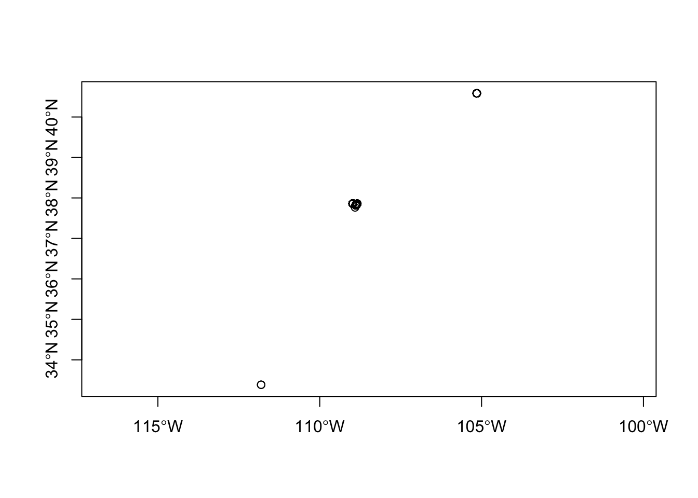
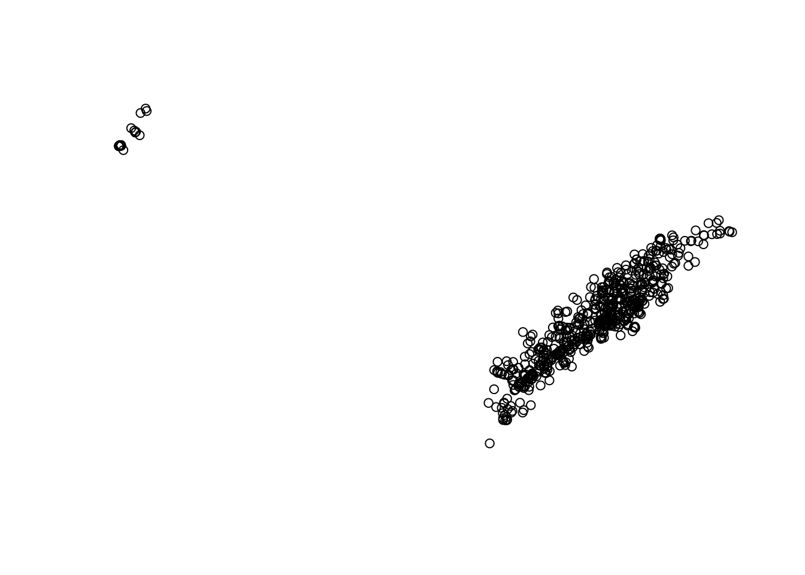
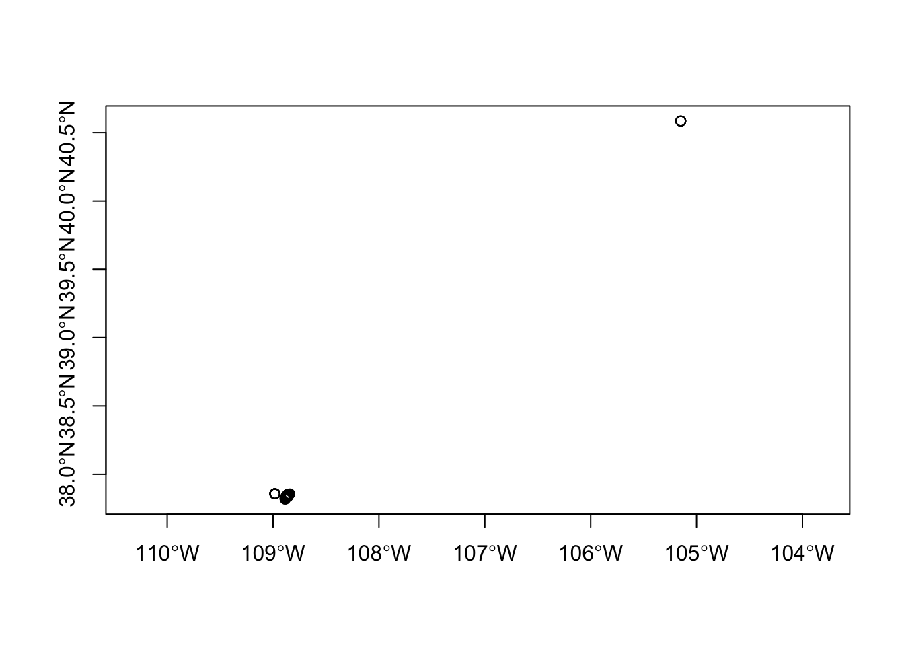
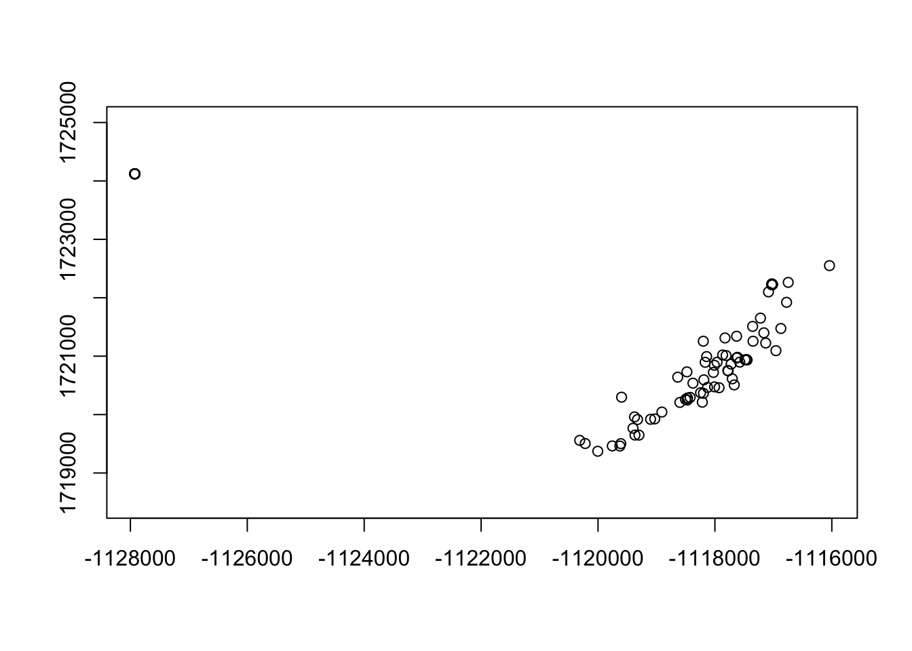
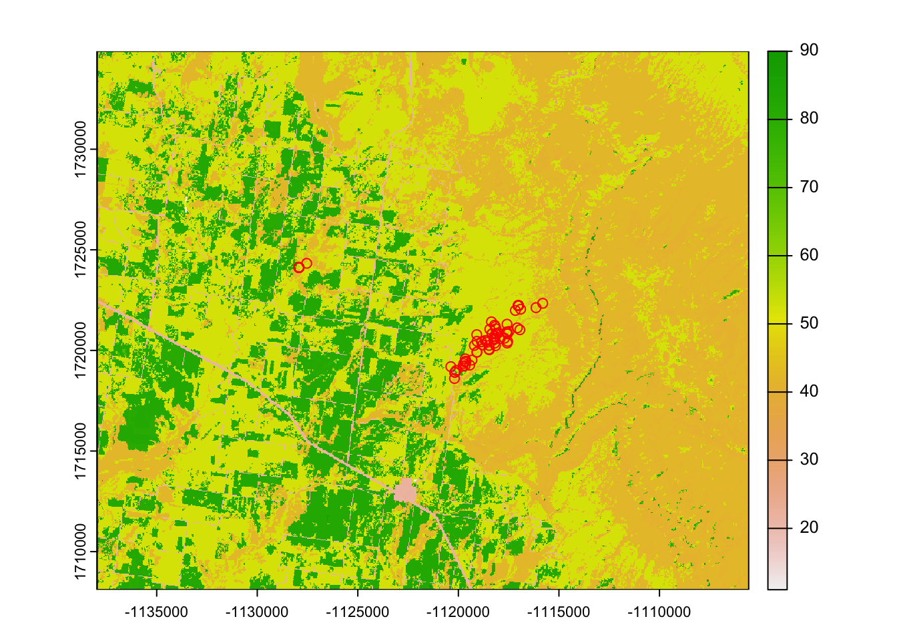
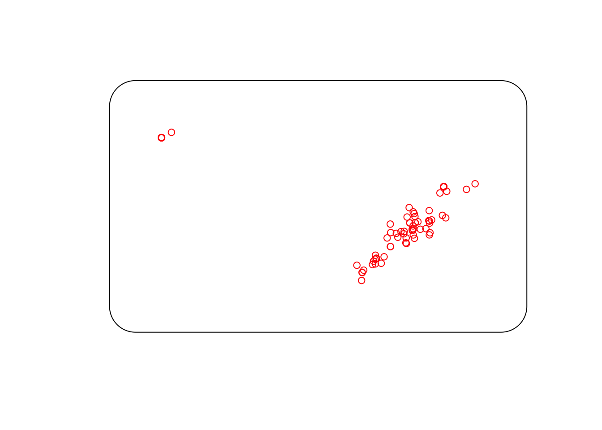
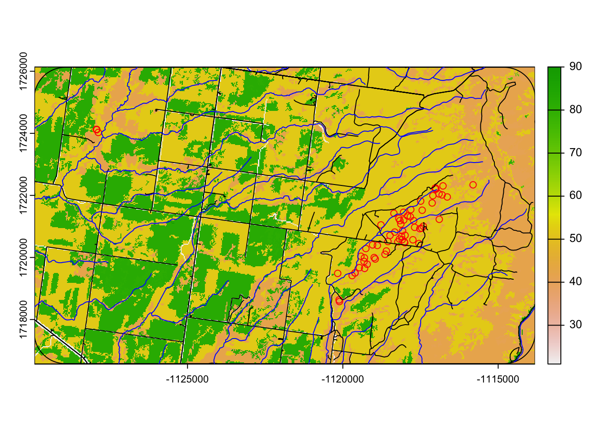

31 Preparing Linear Measures
First we will begin with determining the distance between several features. In our first example, we want to measure distance from each mule deer location to the nearest stream if it is determined a priori that water or riparian habitats influence mule deer distribution in our study area. While this may not seem like a very complicated process, there are numerous steps needed to achieve this feat. We will need to use the package spatstat that will help us in creating individual segments with nodes for linear features such as roads and streams/rivers.
1. Open the script LinearDistscript.Rmd” and run code directly from the script
2. First we need to load the packages needed for the exercise
3. Now let’s have a separate section of code to include projection information we will use throughout the exercise. In previous versions, these lines of code were within each block of code
4. Load the mule deer dataset we used in the previous exercise
muleys <-read.csv("data/muleysexample.csv", header=T)
#Remove outlier locations
coords <- st_as_sf(muleys, coords = c("Long", "Lat"), crs = ll.crs)
plot(st_geometry(coords),axes=T)
deer.spdf <- st_crop(coords, xmin=-107.0,xmax=-110.5,ymin=37.8,ymax=39.0)#Visually identified based on previous plotWarning: attribute variables are assumed to be spatially constant throughout
all geometriesplot(st_geometry(deer.spdf),axes=T)
#Project deer.spdf to Albers as in previous exercise
deer.albers <-st_transform(deer.spdf, crs=albers.crs)
plot(st_geometry(deer.albers,axes=T))
- Only use code in next section for example exercise so fewer locations are used.
muleys <- muleys[sample(nrow(muleys), 100),]
#Make a spatial data frame of locations after removing outliers
coords <- st_as_sf(muleys, coords = c("Long", "Lat"), crs = ll.crs)
plot(st_geometry(coords),axes=T)
deer.spdf <- st_crop(coords, xmin=-107.0,xmax=-110.5,ymin=37.8,ymax=39.0)#Visually identified based on previous Warning: attribute variables are assumed to be spatially constant throughout
all geometries#Project deer.spdf to Albers as in previous exercise
deer.albers <-st_transform(deer.spdf, crs=albers.crs)
plot(st_geometry(deer.albers),axes=T)
6. If we get some NA errors because our grid does not encompass our panther locations then we can expand the grid size extending beyond our locations using methods in an earlier exercise.
# Create vectors of the x and y points using boundary box created around deer locations
bb1 <- st_bbox(deer.albers)
increment = 1000
minx=(min(bb1$xmin)-(increment))
maxx=(max(bb1$xmax)+(increment))
miny=(min(bb1$ymin)-(increment))
maxy=(max(bb1$ymax)+(increment))
my_bbox = st_bbox(c(xmin = minx, xmax = maxx,
ymin = miny, ymax = maxy),
crs = 5070)
AlbersSP <- st_as_sfc(my_bbox)7. Load the necessary road and rivers shapefiles already in Albers projection to match previous vegetation raster.
roads<-st_read("data/AlbersRoads.shp")Reading layer `AlbersRoads' from data source
`/Users/davidwalter/Library/CloudStorage/OneDrive-ThePennsylvaniaStateUniversity/WalterRprojects/Manual-of-Applied-Spatial-Ecology/data/AlbersRoads.shp'
using driver `ESRI Shapefile'
Simple feature collection with 42674 features and 6 fields
Geometry type: MULTILINESTRING
Dimension: XY
Bounding box: xmin: -1300892 ymin: 1621719 xmax: -989792.6 ymax: 1808098
Projected CRS: NAD_1983_Albersrivers<-st_read("data/AlbersRivers.shp")Reading layer `AlbersRivers' from data source
`/Users/davidwalter/Library/CloudStorage/OneDrive-ThePennsylvaniaStateUniversity/WalterRprojects/Manual-of-Applied-Spatial-Ecology/data/AlbersRivers.shp'
using driver `ESRI Shapefile'
Simple feature collection with 5853 features and 7 fields
Geometry type: MULTILINESTRING
Dimension: XY
Bounding box: xmin: -1333589 ymin: 1622164 xmax: -988898 ymax: 1807267
Projected CRS: NAD_1983_Albers10. Load vegetation raster layer tif that came in the Albers projection from the online source.
veg <-rast("data/cropnlcd.tif")#Check to see all our layers are now in Albers projection
st_crs(veg)Coordinate Reference System:
User input: unnamed
wkt:
BOUNDCRS[
SOURCECRS[
PROJCRS["unnamed",
BASEGEOGCRS["GRS 1980(IUGG, 1980)",
DATUM["unknown",
ELLIPSOID["GRS80",6378137,298.257222101,
LENGTHUNIT["metre",1,
ID["EPSG",9001]]]],
PRIMEM["Greenwich",0,
ANGLEUNIT["degree",0.0174532925199433,
ID["EPSG",9122]]]],
CONVERSION["Albers Equal Area",
METHOD["Albers Equal Area",
ID["EPSG",9822]],
PARAMETER["Latitude of false origin",23,
ANGLEUNIT["degree",0.0174532925199433],
ID["EPSG",8821]],
PARAMETER["Longitude of false origin",-96,
ANGLEUNIT["degree",0.0174532925199433],
ID["EPSG",8822]],
PARAMETER["Latitude of 1st standard parallel",29.5,
ANGLEUNIT["degree",0.0174532925199433],
ID["EPSG",8823]],
PARAMETER["Latitude of 2nd standard parallel",45.5,
ANGLEUNIT["degree",0.0174532925199433],
ID["EPSG",8824]],
PARAMETER["Easting at false origin",0,
LENGTHUNIT["metre",1],
ID["EPSG",8826]],
PARAMETER["Northing at false origin",0,
LENGTHUNIT["metre",1],
ID["EPSG",8827]]],
CS[Cartesian,2],
AXIS["easting",east,
ORDER[1],
LENGTHUNIT["metre",1,
ID["EPSG",9001]]],
AXIS["northing",north,
ORDER[2],
LENGTHUNIT["metre",1,
ID["EPSG",9001]]]]],
TARGETCRS[
GEOGCRS["WGS 84",
DATUM["World Geodetic System 1984",
ELLIPSOID["WGS 84",6378137,298.257223563,
LENGTHUNIT["metre",1]]],
PRIMEM["Greenwich",0,
ANGLEUNIT["degree",0.0174532925199433]],
CS[ellipsoidal,2],
AXIS["geodetic latitude (Lat)",north,
ORDER[1],
ANGLEUNIT["degree",0.0174532925199433]],
AXIS["geodetic longitude (Lon)",east,
ORDER[2],
ANGLEUNIT["degree",0.0174532925199433]],
USAGE[
SCOPE["Horizontal component of 3D system."],
AREA["World."],
BBOX[-90,-180,90,180]],
ID["EPSG",4326]]],
ABRIDGEDTRANSFORMATION["Transformation to WGS84",
METHOD["Position Vector transformation (geog2D domain)",
ID["EPSG",9606]],
PARAMETER["X-axis translation",0,
ID["EPSG",8605]],
PARAMETER["Y-axis translation",0,
ID["EPSG",8606]],
PARAMETER["Z-axis translation",0,
ID["EPSG",8607]],
PARAMETER["X-axis rotation",0,
ID["EPSG",8608]],
PARAMETER["Y-axis rotation",0,
ID["EPSG",8609]],
PARAMETER["Z-axis rotation",0,
ID["EPSG",8610]],
PARAMETER["Scale difference",1,
ID["EPSG",8611]]]]st_crs(deer.albers)Coordinate Reference System:
User input: EPSG:5070
wkt:
PROJCRS["NAD83 / Conus Albers",
BASEGEOGCRS["NAD83",
DATUM["North American Datum 1983",
ELLIPSOID["GRS 1980",6378137,298.257222101,
LENGTHUNIT["metre",1]]],
PRIMEM["Greenwich",0,
ANGLEUNIT["degree",0.0174532925199433]],
ID["EPSG",4269]],
CONVERSION["Conus Albers",
METHOD["Albers Equal Area",
ID["EPSG",9822]],
PARAMETER["Latitude of false origin",23,
ANGLEUNIT["degree",0.0174532925199433],
ID["EPSG",8821]],
PARAMETER["Longitude of false origin",-96,
ANGLEUNIT["degree",0.0174532925199433],
ID["EPSG",8822]],
PARAMETER["Latitude of 1st standard parallel",29.5,
ANGLEUNIT["degree",0.0174532925199433],
ID["EPSG",8823]],
PARAMETER["Latitude of 2nd standard parallel",45.5,
ANGLEUNIT["degree",0.0174532925199433],
ID["EPSG",8824]],
PARAMETER["Easting at false origin",0,
LENGTHUNIT["metre",1],
ID["EPSG",8826]],
PARAMETER["Northing at false origin",0,
LENGTHUNIT["metre",1],
ID["EPSG",8827]]],
CS[Cartesian,2],
AXIS["easting (X)",east,
ORDER[1],
LENGTHUNIT["metre",1]],
AXIS["northing (Y)",north,
ORDER[2],
LENGTHUNIT["metre",1]],
USAGE[
SCOPE["Data analysis and small scale data presentation for contiguous lower 48 states."],
AREA["United States (USA) - CONUS onshore - Alabama; Arizona; Arkansas; California; Colorado; Connecticut; Delaware; Florida; Georgia; Idaho; Illinois; Indiana; Iowa; Kansas; Kentucky; Louisiana; Maine; Maryland; Massachusetts; Michigan; Minnesota; Mississippi; Missouri; Montana; Nebraska; Nevada; New Hampshire; New Jersey; New Mexico; New York; North Carolina; North Dakota; Ohio; Oklahoma; Oregon; Pennsylvania; Rhode Island; South Carolina; South Dakota; Tennessee; Texas; Utah; Vermont; Virginia; Washington; West Virginia; Wisconsin; Wyoming."],
BBOX[24.41,-124.79,49.38,-66.91]],
ID["EPSG",5070]]st_crs(AlbersSP)Coordinate Reference System:
User input: EPSG:5070
wkt:
PROJCRS["NAD83 / Conus Albers",
BASEGEOGCRS["NAD83",
DATUM["North American Datum 1983",
ELLIPSOID["GRS 1980",6378137,298.257222101,
LENGTHUNIT["metre",1]]],
PRIMEM["Greenwich",0,
ANGLEUNIT["degree",0.0174532925199433]],
ID["EPSG",4269]],
CONVERSION["Conus Albers",
METHOD["Albers Equal Area",
ID["EPSG",9822]],
PARAMETER["Latitude of false origin",23,
ANGLEUNIT["degree",0.0174532925199433],
ID["EPSG",8821]],
PARAMETER["Longitude of false origin",-96,
ANGLEUNIT["degree",0.0174532925199433],
ID["EPSG",8822]],
PARAMETER["Latitude of 1st standard parallel",29.5,
ANGLEUNIT["degree",0.0174532925199433],
ID["EPSG",8823]],
PARAMETER["Latitude of 2nd standard parallel",45.5,
ANGLEUNIT["degree",0.0174532925199433],
ID["EPSG",8824]],
PARAMETER["Easting at false origin",0,
LENGTHUNIT["metre",1],
ID["EPSG",8826]],
PARAMETER["Northing at false origin",0,
LENGTHUNIT["metre",1],
ID["EPSG",8827]]],
CS[Cartesian,2],
AXIS["easting (X)",east,
ORDER[1],
LENGTHUNIT["metre",1]],
AXIS["northing (Y)",north,
ORDER[2],
LENGTHUNIT["metre",1]],
USAGE[
SCOPE["Data analysis and small scale data presentation for contiguous lower 48 states."],
AREA["United States (USA) - CONUS onshore - Alabama; Arizona; Arkansas; California; Colorado; Connecticut; Delaware; Florida; Georgia; Idaho; Illinois; Indiana; Iowa; Kansas; Kentucky; Louisiana; Maine; Maryland; Massachusetts; Michigan; Minnesota; Mississippi; Missouri; Montana; Nebraska; Nevada; New Hampshire; New Jersey; New Mexico; New York; North Carolina; North Dakota; Ohio; Oklahoma; Oregon; Pennsylvania; Rhode Island; South Carolina; South Dakota; Tennessee; Texas; Utah; Vermont; Virginia; Washington; West Virginia; Wisconsin; Wyoming."],
BBOX[24.41,-124.79,49.38,-66.91]],
ID["EPSG",5070]]plot(veg)
plot(st_geometry(deer.albers),add=T, col="red")
11. Then we need to expand the bounding polygon so all locations are included. We can then make the bounding polygon (AlbersSP) a class owin in order to proceed with functions in package spatstat.
buffSP <- st_buffer(AlbersSP,1000)
plot(st_geometry(buffSP))
plot(st_geometry(deer.albers),add=T,col="red")
12. Code below will be for use with the spatstat package to convert segments of line layers (e.g., roads, rivers) to lines to enable distance to feature from deer locations. Most calculations with spatstat require 3 new classes so most code is created to achieve this goal:
“owin” Observation windows “ppp” Planar point patterns “psp” Planar segment patterns
#Replace AlbersSP with buffSP if using a subsample of deer
bdy.owin <- as.owin(buffSP)
is.owin(bdy.owin)[1] TRUE#It is TRUE so now we can move forward with the analysis12. Now clip the raster using the buffered bounding box (buffSP) created in step 5.
bbclip <- crop(veg, buffSP)
cliproads <- st_intersection(roads, buffSP, byid=TRUE)
cliprivers <- st_intersection(rivers, buffSP, byid=TRUE)
plot(bbclip)
plot(st_geometry(buffSP),add=T)
plot(st_geometry(deer.albers),add=T,col="red")
plot(st_geometry(cliproads),add=T)
plot(st_geometry(cliprivers), col="blue",add=T)
13. We will start with the road layer by converting a single line to a set of segments packaged as a function.
foo <- function(cliproads){
x <- cliproads@Lines[[1]]@coords
cbind(
head(x,-1),
tail(x,-1))}
#The function can be applied successively to each line in the list we extracted from roads.
#Results are output as a list, then converted to a matrix.
segs.lst <- lapply(cliproads@lines,foo)
segs <- do.call(rbind,segs.lst)
segs.x <- c(segs[,c(1,3)])
segs.y <- c(segs[,c(2,4)])
segs.owin <- as.owin(c(range(segs.x),range(segs.y)))#create a new "owin" class because
#roads occur outside our bdy.owin created above
#The segments as a planar segment pattern:
segs.psp <- as.psp(segs, window=segs.owin)
plot(segs.psp)
points(deer.albers)
segs.psp[1:5]
#lengths.psp(segs.psp[1:10])
#We can cut road segments into distances we control
dist <- pointsOnLines(segs.psp, eps=1000)14. We first need to handle the mule deer locations. We need to make mule deer xy coordinates a planar point pattern (i.e., ppp) for use in package spatstat.
deer2 <-as.data.frame(deer.albers)
newdeer <-cbind(deer2$x,deer2$y)
xy.ppp <- as.ppp(newdeer,W=bdy.owin)
plot(xy.ppp)15. Now we can determine the distance from mule deer locations (xy.ppp) to the nearest road
roaddist <- nncross(xy.ppp, segs.psp)$dist
#Or identify segment number closest to each point
v <- nearestsegment(xy.ppp,segs.psp)#Identifies segment number not a distance
plot(segs.psp)
plot(xy.ppp[101], add=TRUE, col="red")
plot(segs.psp[v[101]], add=TRUE, lwd=5, col="red")16. Now we do the same to a river layer by converting a single line to a set of segments packaged as a function.
foo <- function(cliprivers){
x <- cliprivers@Lines[[1]]@coords
cbind(
head(x,-1),
tail(x,-1))}
#The function can be applied successively to each line in the list we extracted from roads.
#Results are output as a list, then converted to a matrix.
rivs.lst <- lapply(cliprivers@lines,foo)
rivs <- do.call(rbind,rivs.lst)
rivs.x <- c(rivs[,c(1,3)])
rivs.y <- c(rivs[,c(2,4)])
rivs.owin <- as.owin(c(range(rivs.x),range(rivs.y)))
#The segments as a planar segment pattern:
rivs.psp <- as.psp(rivs, window=rivs.owin)
plot(rivs.psp)
points(deer.albers)
is.psp(rivs.psp)
#All is TRUE so now we can move forward with the analysis17. Now we can determine the distance from mule deer locations (xy.ppp) to the nearest river.
rivdist <- nncross(xy.ppp, rivs.psp)$dist
#Or identify segment number closest to each point
riv <- nearestsegment(xy.ppp,rivs.psp)
plot(rivs.psp, lwd=1)
plot(xy.ppp[1], add=TRUE, col="red")
plot(rivs.psp[riv[1]], add=TRUE, lwd=5, col="red")
plot(xy.ppp[290], add=TRUE, col="blue")
plot(rivs.psp[riv[290]], add=TRUE, lwd=5, col="blue")
points(deer.albers)18. We can then summarize the distances in some meaningful way for analysis. Instead of representing distance to road as individual numerical values we can bin the distances in some categories we determine appropriate for our research objective.
br <- seq(0,1000,200)
lbl <- paste(head(br,-1),tail(br,-1),sep="-")
road.tbl <- table(cut(roaddist,breaks=br,labels=lbl))
Rdresults <- road.tbl/sum(road.tbl)
Rdresults
br1 <- seq(0,4000,500)
lbl1 <- paste(head(br1,-1),tail(br1,-1),sep="-")
river.tbl <- table(cut(rivdist,breaks=br1,labels=lbl1))
Rivresults <- river.tbl/sum(river.tbl)
Rivresults19. Or we can place each distance into a category or Bin for each deer
BinRoad <- bin(roaddist, nbins=5, method='content', labels=c('1','2','3','4','5'))
BinRoad2 <- cut(roaddist, 5, method='intervals', include.lowest=TRUE, labels=c('1','2','3'
,'4','5'))
table(BinRoad)
BinRivers <- bin(rivdist, nbins=5, method='content', labels=c('1','2','3','4','5'))
BinRivers <- cut(rivdist, 5, method='intervals', include.lowest=TRUE, labels=c('1','2','3'
,'4','5'))
table(BinRivers)
#Now use cbind function to add binned distances to muleys dataset.
Dist <- cbind(BinRoad,BinRivers)
muleys <- cbind(muleys, Dist)